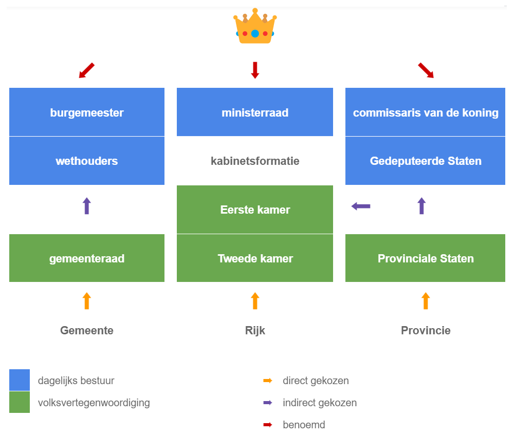

Provincies
Elke vier jaar zijn er verkiezingen voor de Provinciale Staten.
Hierin zitten vertegenwoordigers van politieke partijen.
Zij kiezen een College dat de provincie bestuurt.
De voorzitter is de Commissaris van de Koning.
In Limburg wordt die Gouverneur genoemd.
De stad waar de Proviciale Staten vergaderen, is de hoofdstad van
de provincie.
Het aantal leden van Provinciale Staten is afhankelijk van het
aantal inwoners van de provincie.
In Limburg zijn dat er 47.
De leden van de Provinciale Staten kiezen de leden van de
Eerste Kamer.
Vragen
- In welke provincie wonen wij?
- Wat is de hoofdstad van onze provincie?
- Ken je nog meer Nederlandse provincies?
- Hoeveel provincies heeft Nederland?
- Wat doet de Eerste Kamer?
- Welke Nederlandse politieke partijen ken je?
Zijn ze links of rechts?

Schema politiek bestuur in Nederland